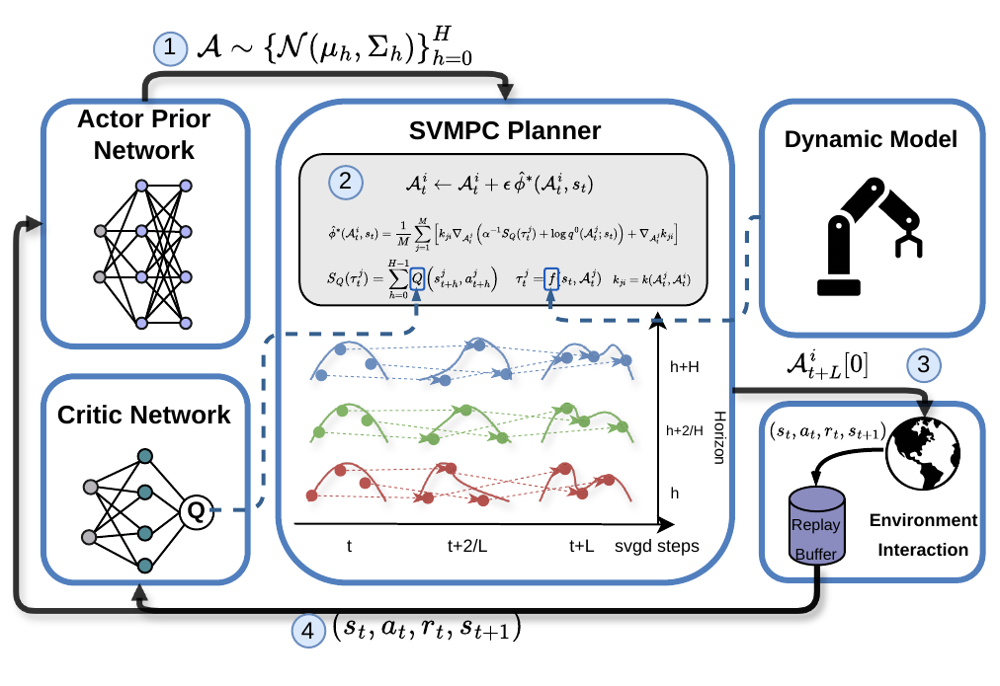

Policy prior
An RL-informed actor initializes a distribution over candidate action sequences.
The University of Sydney · NVIDIA
The idea
Q-SVMPC treats model predictive control as trajectory-level posterior inference. A learned policy supplies a prior over action sequences; soft Q-values guide the search toward promising trajectories.
Stein variational gradient descent (SVGD) refines multiple trajectory particles while preserving diverse solutions. The planner executes the first action of a refined sequence and replans at the next step, integrating learned guidance with model-predictive rollouts.
Framework
Policy priors, value guidance, and particle-based optimization work together inside a receding-horizon planner.

An RL-informed actor initializes a distribution over candidate action sequences.
Learned soft Q-values provide the optimality signal for trajectory inference.
SVGD updates particles to explore high-value solutions without collapsing them into one trajectory.
Evaluation
The paper evaluates Q-SVMPC on 2D navigation, robotic manipulation, and a real-world fruit-picking task. Across these settings, it reports competitive learning efficiency and training stability compared with MPC, model-free RL, and learning-based MPC baselines.
Q-SVMPC achieves its strongest final results on obstacle-rich reaching and pick-and-place, while remaining competitive on simpler reaching and navigation tasks. Ablations study the effects of the learned prior, planning horizon, and dynamics model.
Explore the full results in the paperReference
Accepted to the 2026 IEEE/RSJ International Conference on Intelligent Robots and Systems.
@inproceedings{cai2026qsvmpc,
title = {{Q-Guided Stein Variational Model Predictive Control via RL-informed Policy Prior}},
author = {Cai, Shizhe and Yin, Zeya and Jacob, Jayadeep and Ramos, Fabio},
booktitle = {2026 IEEE/RSJ International Conference on Intelligent Robots and Systems (IROS)},
year = {2026}
}